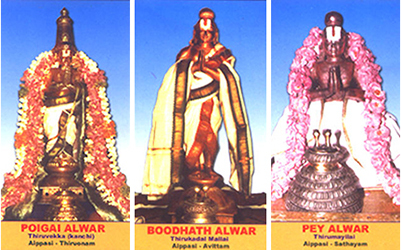
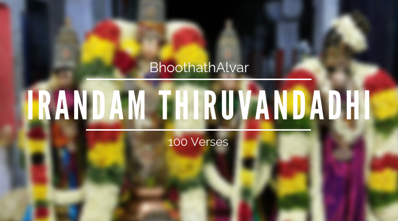

HOME
AZHVARS
ACHARYA
VEDIC SCIENCE
ABOUT US
HOME
AZHVARS
ACHARYA
VEDIC SCIENCE
ABOUT US
 |
|
|---|---|
| PEY AZHVAR | |
| MONTH: | Iypasi Sathayam |
| BIRTHPLACE: | Mylapore (historically called Manikaivaram) - Adi Kesava Perumal Temple) |
| WORKS: | Moondram Thiruvandhadhi (100 Verses) |
| AVATAR OF: | Nandaka (Vishnu's sword) |
|
|
Peyazhwar is considered third in the list of the three principal azhwars, with the other two being Poigai Azhwar and Bhoothath Azhwar, collectively called Muthalamazhwargal who are known to be born out of divinity. Pey Azhwar was found in the lily flower in the pond of the Adi Kesava Perumal Temple in Mylapore.
It was day time at thirukkovalur, but it darkened and started raining heavily. The wandering Poigai azhwar found out a small hide out, which has a space for one person to lie down. Boodath azhwar arrived there looking for a hiding place and Poigai azhwar accommodated him, with both sitting together. In the meanwhile, Peyazhwar also came to the same place as all the three preferred to stand because of lack of space. The darkness became dense and inside the small room, they were not able to see each other. In the meanwhile, they felt a fourth person also forced his way among them. The three azhwars realised from the light of the lightning that the fourth one had a charming face that was sublime and divine. The trio could immediately realize that it was Vishnu who was huddling among them.

Poigai Azhwar wished to see His face continuously but the lightening was playing the hide and seek game. With a view to maintain the continuity of light and never miss the view of the divine face, he instantly composed 100 songs wishing the earth to be a big pot full of ghee of ocean where the sun could be the burning wick.
Bhoothathazhwar then sang 100 songs imagining to light the lamp constantly through ardent love for Him.
Pey azhwar then sang 100 songs starting,
Tiruk Kanden Pon Meni Kanden- Thigazhum
Arukkan Ani Niramum Kanden-Seruk Kilarum
Pon Aazhi Kanden Puri Sangam Kai Kanden
En Aazhi Vannan Paal Inru
I found the glorious, golden form of the Lord. Peyazhwar sang another 100 songs where he described the enchanting charm of the divine face and the association of Narayana equipped with sankha and chakra, and his divine consort goddess Lakshmi.
Pey Azhwar’s composition are set in the Andhadhi style. The word “Andha” means “end” and “Adi” means “beginning”. The most noteworthy feature of the work is that the ending word or the syllable of each verse becomes the beginning word of the succeeding verse and the last word of the hundredth verse becomes the beginning of the first verse, thus making the hundred verses a true garland of verses.

Poygaiar Bhuthatthar Peyar , Pukazh Mazhisai
Ayyan Arulmaran Seralrkkon --Thuyya Bhatta
Nathan Anbar Thall Thuli Narr Paanan Nann Kaliyan
Ithivar Thorratthu Adaivu Aam Inghu
The order of avatharam of the Azhwars in this earth is: Poigai Azhwar is First; Bhutham Azhwar is second; Peiazhwar is third; the reputed Thirumazhisai Piran is fourth; Nammazhwar of illustrious grace (Arul) is fifth; Kulasekara azhwar is the sixth ; the sacred Periyazhwar free of any blemish is the seventh; Thondaradippodi azhwar (Bhakthangri Renu) is the eighth; Thiruppaan azhwar, the parama saathvikar is the ninth in order; dear Thirumangai azhwar is tenth .This then is the order in which they incarnated on Bhumandalam . (One may wonder about the absence of ANDAL and Madhura Kavi in the above list. Sri Manavala Mamunigal pays special attention to them later slokas of Upadesa Rathinamala).
Iyppasiyil Onam Avittam Sathayamivai
Oppilavam Nalkal Ulahatthir !--Yeppuviyum
Pesu Pukazh Poykayar Bhuthatthar Peyazhwar
Tesudane Thonru Sirappal.
In this pasuram, Manavala Mamunigal tells, Oh, People of the World! Poigai azhwar, Bhuthath azhwar And Peiazhwars have the distinct fame of being eulogized in every corner of the World. If we were to ask as to which were the days in which they incarnated on this earth with their radiances, then they are Iyppasi Sravanam, Avittam and Sathayam respectively.

Marrulla Aazhwarkalukku Munne Vanthu Uthitthu
Narramizhal Nool Seythu Naattai Uyttha -Perrimaiyor
Yenru Mudhal Aazhwarkal Yennum Peyar Ivarkku
Ninrathu Ulahatthe Nihazhnthu
By incarnating on this earth before the remaining seven Azhwars and by offering
(to the people of the world) the means of salvation through the Divya Prabandhams of Mudhal Thiruvandhadhi,
Irandam Thiruvandhadhi and Moondram Thiruvandhadhi, the first three Azhwars earned the name "Mudhalazhwars"
-- a reference that has come to stay since then.